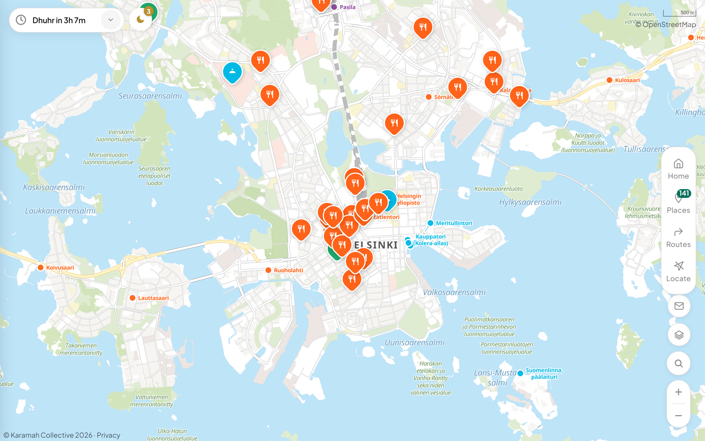
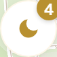
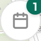

Overview
Open the app and you'll see a map with coloured markers showing verified halal places near you.
● Coloured markers for each type (restaurants, mosques, shops)
● Search button at the top
● Tab bar at the bottom — your main navigation
● Prayer time pill & Eid/Events badges along the top

On desktop, the same features appear in a wider layout with the tab bar on the right side.
📱
Install as an app: Tap "Add to Home Screen" in your browser menu. Halal Finder is a PWA — it opens full-screen like a native app and works offline.
Navigation
The tab bar at the bottom (on mobile) or the right edge (on desktop) has four buttons.
1 Home
Map view. Prayer times, Eid button, events visible here.
2 Places
Scrollable list of all places. Filter by category. Suggest new places.
3 Routes
Get walking, cycling, driving, or transit directions.
4 Locate
Centre map on your GPS position. Long-press to follow.
Searching
Tap the search button in the top-left corner. Results update as you type.
1 Tap the magnifying glass
↓
2 Type — results appear instantly
Searches names, addresses, and tags. Tap a result to fly to it on the map.
Browsing Places
The Places tab shows every verified halal spot. Tap category chips to filter. Tap any place to see details.
● Tap any marker or list item
The popup shows name, address, tags, and quick-action buttons: get directions, save, or share.
🔖
Use the filter chips at the top of the Places list — "Restaurant", "Mosque", "Shop", etc.
Adding a Place
Know a halal spot that's missing? Suggest it in seconds. Three methods, from easiest to most precise:
1 Copy a Google Maps link
Open Google Maps, find the place, tap Share → Copy link.
↓
2 Open "Suggest a Place"
Places tab → scroll down → Suggest a Place. Paste the link — name and address auto-fill.
↓
3 Pick category & tags
Choose the type and tap relevant tags. Tags are highly encouraged — they help users find exactly what they need.
↓
4 Submit
Hit Submit. We review and publish it to the map.
⭐
Easiest method! A Google Maps link auto-fills name, address, and coordinates — minimal typing needed.
1 Open "Suggest a Place"
Places tab → Suggest a Place button.
↓
2 Type the address
Suggestions appear from OpenStreetMap. Tap the correct one — coordinates are captured automatically.
↓
3 Choose category & tags
Select type, then tap all relevant tags. Tags are highly encouraged!
↓
4 Submit
We'll verify and add it to the map.
1 Long-press on the map
Hold the exact location. A pin appears with coordinates.
↓
2 Tap "Add Place Here"
The pin popup has this button. Opens the form with coordinates pre-filled.
↓
3 Fill name, category & tags
Enter the place name, select type, pick tags. Tags are highly encouraged.
↓
4 Submit
Done — we'll review and publish.
📍
Best when you're physically at the location — drop the pin right on the building.
Directions
Tap Routes to get turn-by-turn directions. Walk, bike, drive, or take public transit.
1 Set origin & destination
Your current location fills automatically. Type a destination or tap "Directions" on any place popup.
2 Choose mode
Switch between 🚶 Walk, 🚲 Bike, 🚗 Drive, or 🚌 Transit.
3 Go
Route draws on the map. Tap "Start" for navigation.
🚌
Transit uses real-time HSL/Waltti data. Shows bus numbers and departure times.
Prayer Times
Daily salah times based on your location in Finland.
● Tap the prayer pill on the Home screen
Shows all five prayers plus sunrise. Next prayer highlighted with a countdown.
● Nearest mosque shortcut
Quickly find and navigate to the closest mosque.
Eid & Events
Special features that appear during Eid season and for community events.


🌙 Eid pill — appears before and during Eid
Tap to see all Eid prayer locations, jamaat times, and organisers across Finland.
📅 Events pill — year-round
Lists upcoming mosque events, lectures, and community gatherings.
↓
● Full Eid prayer list
Grouped by city. Shows mosque, organiser, and all jamaat times. Tap to navigate there.
Saving Places
Bookmark places you visit often for quick access.
1 Tap the bookmark icon on any popup
Saves the place to your personal list (stored locally on your device).
2 Find saved places
Saved places show a distinct marker on the map. Use the "Saved" filter in Places.
⚠️
Saved places are stored in your browser. Clearing browser data removes them.
Tips
📍 Long-press Locate for tracking
Single tap = centre once. Long-press = follow as you move.
🔗 Share places via URL
Each place has a unique link. Tap the share button to copy it.
🧭 Qibla direction
The compass shows Qibla from your current location.
⌨️ Desktop shortcut
Press / to jump into search instantly.